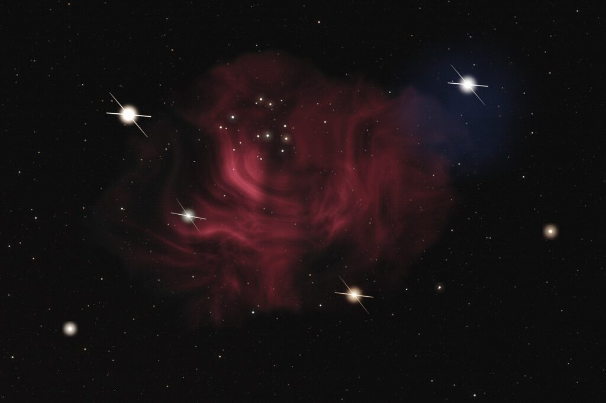

DEEP SKY TOOLKIT · BY MZZZ
把热爱，
写进星空。
从挑一台智能望远镜、找一片够暗的天空，到把一张 FITS / XISF 处理成能发出去的作品——这条路上要用的工具，我一件件做了出来。

为星空，做一点东西.
七个项目，持续生长。
覆盖从选器材、找暗空，到出片与动态呈现的完整流程。
WEB APP
灵感，从一张原片开始
Starun 网页版
上传线性 FITS / XISF，拿到星点、噪声与动态范围的诊断报告，再选一套风格自动出图。
打开在线后期
macOS · APPLE SILICON
Starun 桌面端
整条后期流水线跑在本机，自动叠加、自动拉伸。原片不出硬盘。
ANDROID
Starun 手机端
在 Android 上直接打开 FITS / XISF，通勤路上也能修完一张。离线可用，修完直接分享。
WEB APP · LOCAL-FIRST
deepsky-motion 深空视差
把一张深空照片分成多层星点，用相机推进式运镜生成 3D 视差视频与实况图，导出 MP4 或动态 WebP。
AGENT SKILLS
DeepSky Skills
拍前给拍摄参数与构图建议，拍后诊断星点，再交给 Siril 完成叠加与马赛克拼接。
EQUIPMENT GUIDE
智能望远镜对照表
Seestar、DWARF 全系并排对比：口径、传感器、单张曝光上限、内后期能力，价格一起看。
DARK SKY MAP
找一片更暗的天空
按波特尔等级看附近的光污染，找到最近一个能拍出银河的点位。
探索拍摄地图今晚，想从哪里开始？
一个开发者，一些关于星空的想法。
我是 MZZZ。Starun 是我的个人项目集合——深空后期、器材选型、暗空地图，都由我一个人写、一个人维护。把复杂的步骤变得顺手，让更多时间留给头顶的那片星空。